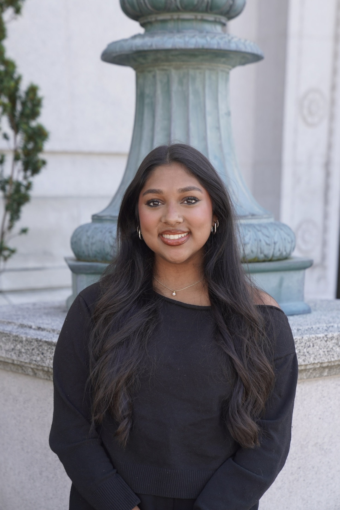
President
Aalini Jain
- Major
- Molecular & Cell Biology and Data Science
- Year
- Junior
- Hobbies
- Cooking, baking, swimming, painting
Fall 2026
Students from across Berkeley, united by curiosity and a shared belief that biotechnology should be open to everyone.
September 9–11 · About 15 minutes · Choose any available person below
Leadership

President
External Vice President
Finance Vice President
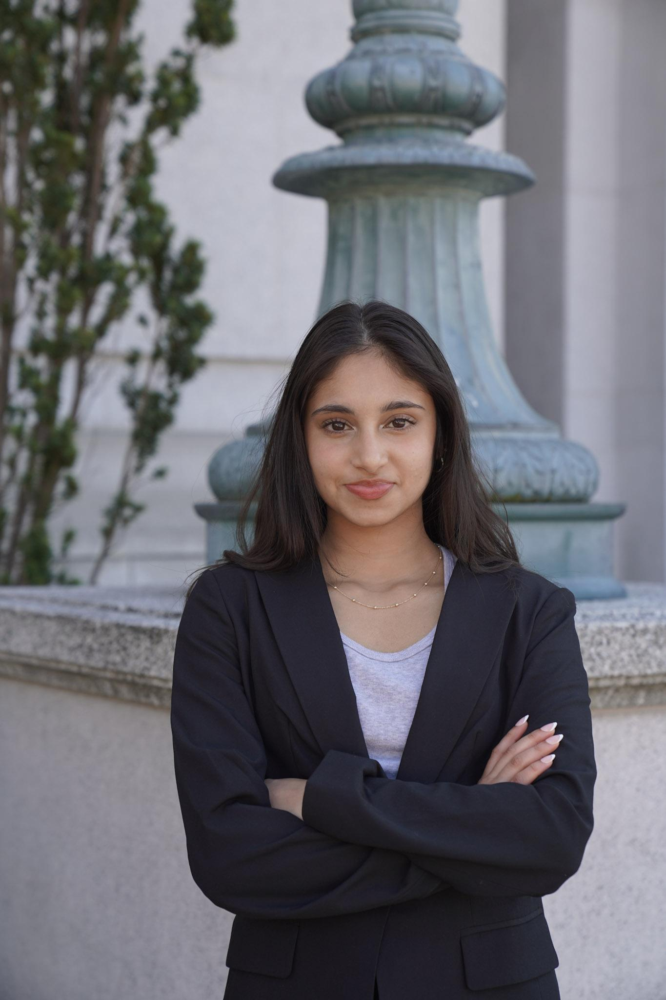
Communications Vice President
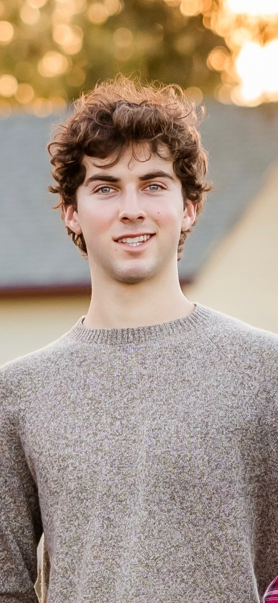
Internal Vice President
Outreach
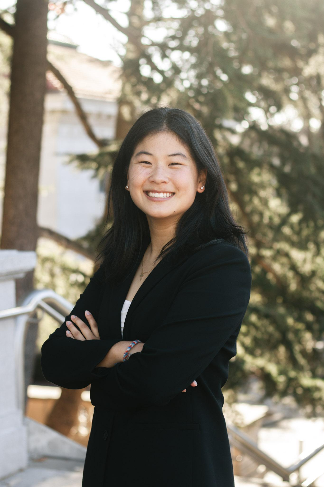
External Committee
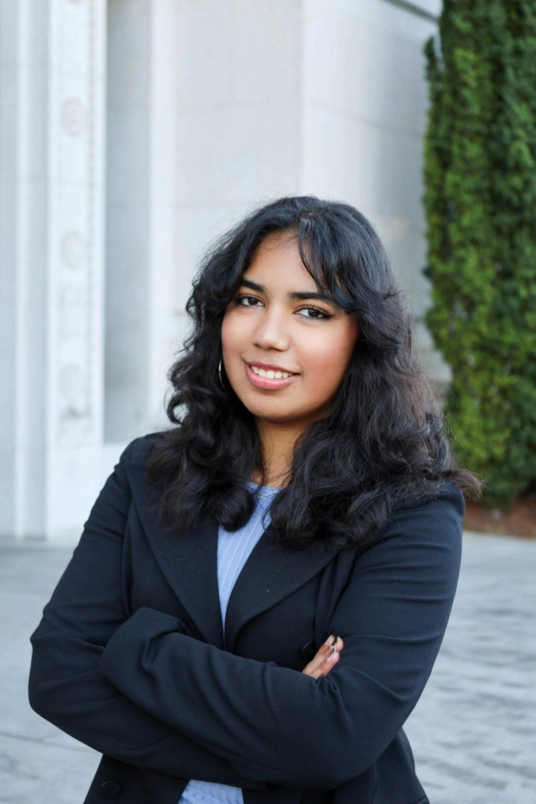
External Committee
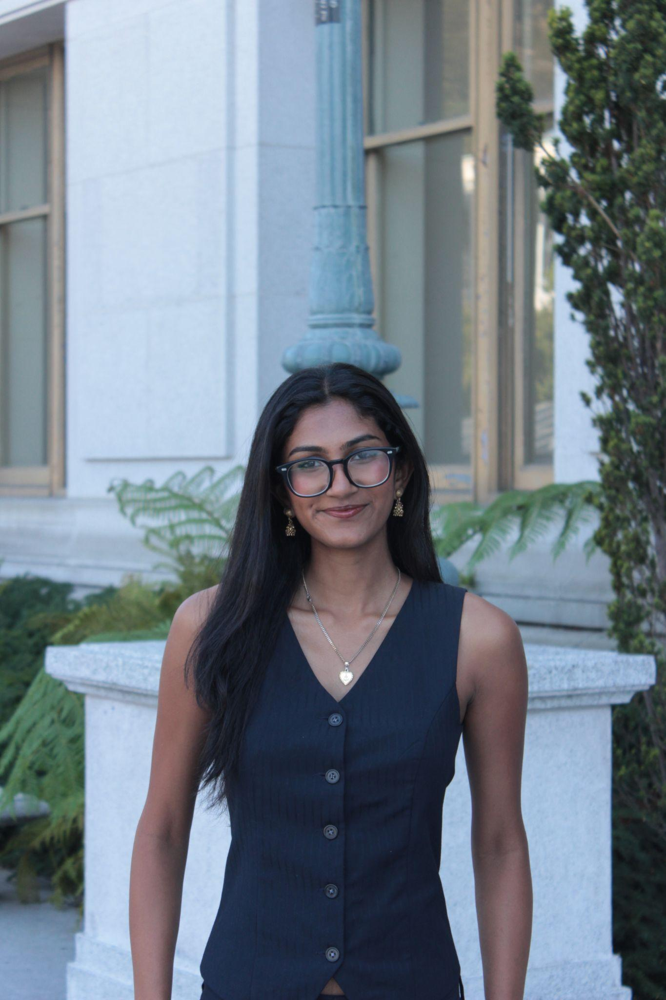
External Committee
Community
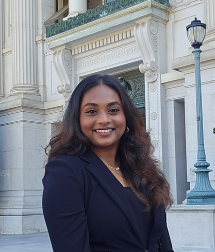
Internal Committee
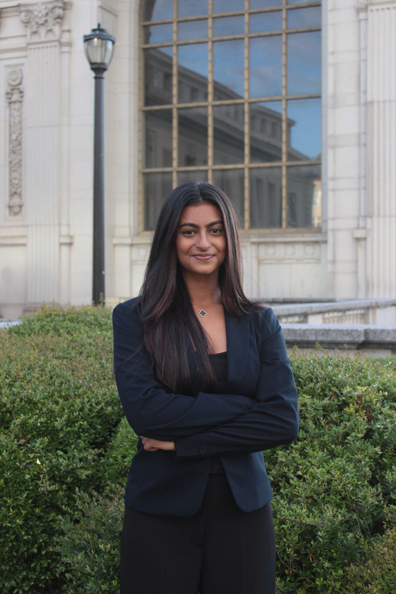
Internal Committee
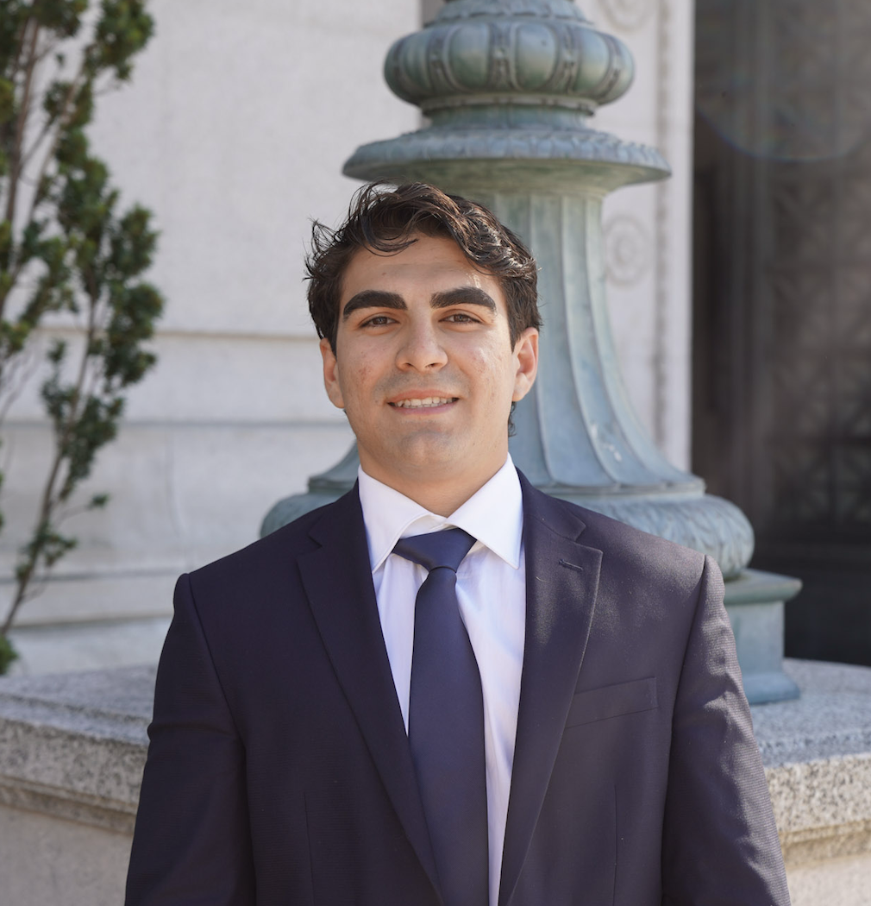
Internal Committee
Operations
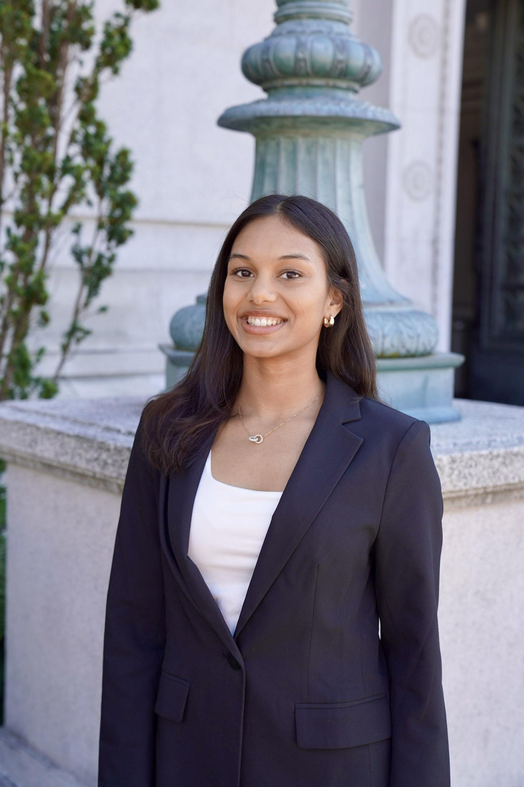
Finance Committee
Advisory
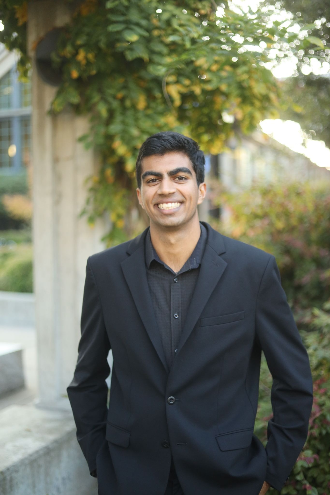
Senior Advisor
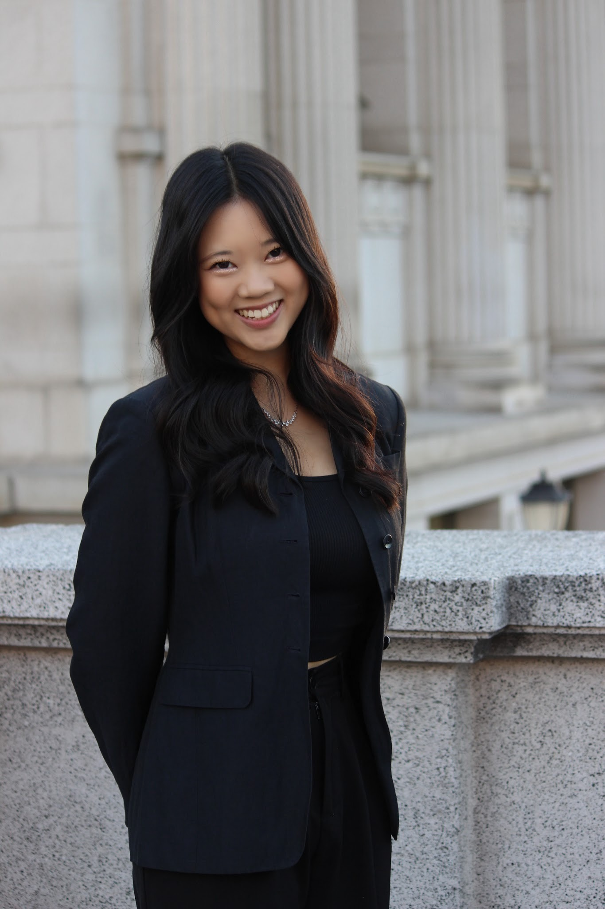
Senior Advisor